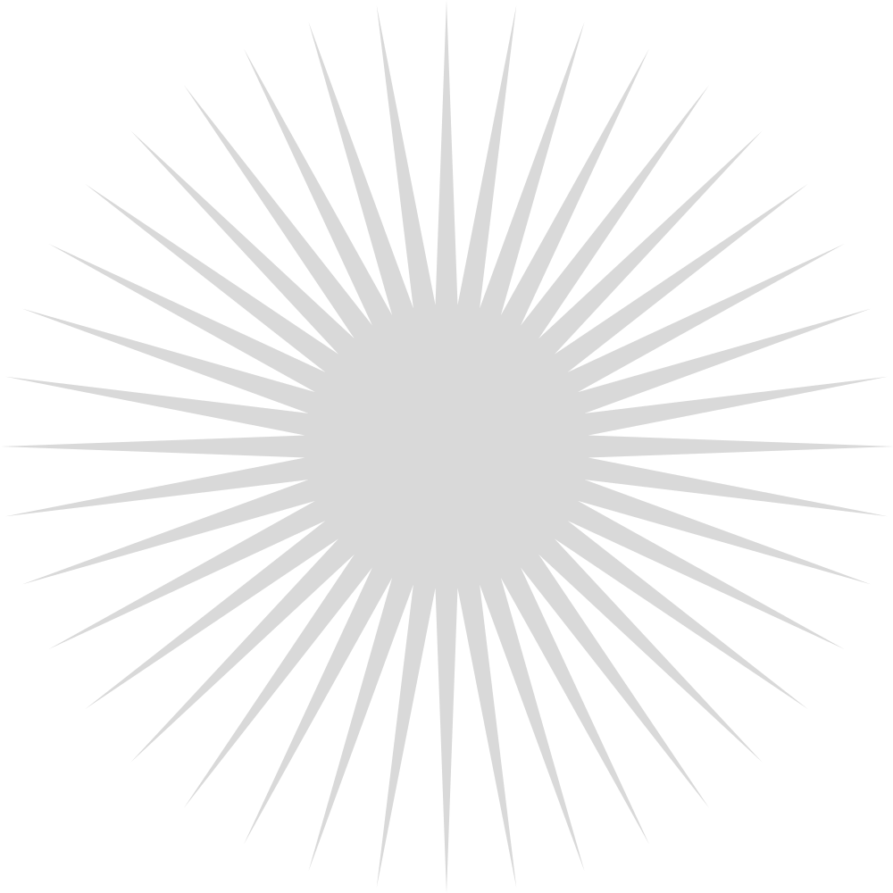
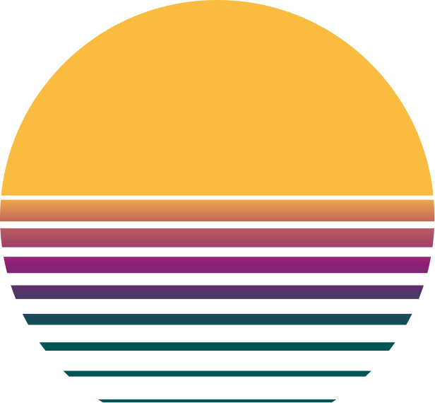
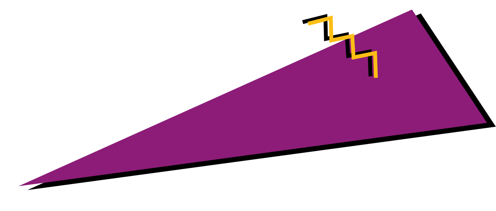
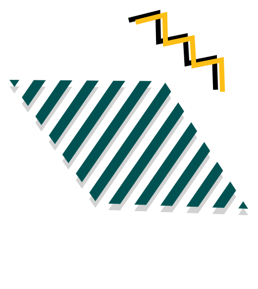

TNECD.com Site Redesign
Tennessee Economic and Community Development website redesign with a modernized visual system and clearer, more intuitive content architecture.
Visit TNECD.com
Tools: Figma, Photoshop, Illustrator
Read Case StudyCreative Technologist in Product Design






Six selected projects below
Tennessee Economic and Community Development website redesign with a modernized visual system and clearer, more intuitive content architecture.
Visit TNECD.com
Tools: Figma, Photoshop, Illustrator
Read Case Study
Unified navigation and CTA strategy across WorldPrideDC’s web ecosystem, resulting in a 30× increase in Pride365 app adoption.
Tools and Skills: Figma, Web Design, UX/UI Design, Research, Visual Design
Read Case Study
Designing an AI‑powered interface that turns complex logistics data into clear, actionable workflows.
Tools: Figma, Photoshop, Illustrator
Read Case Study
Designed and produced a suite of print and digital brand assets for DRØM, preparing CMYK‑ready files and consistent visuals for campaigns and packaging.
Tools: Illustrator, Photoshop, Product Photography
View Print Samples
Created a bespoke, place‑rooted brand and illustration system that transformed a simple template into a distinctive digital storefront for a St. Johns wine shop.
Tools: HTML, CSS, Photoshop, Illustrator, Squarespace
View Design Process
Designed static and animated assets for multi‑channel campaigns, adapting visuals across social, email, and web while maintaining a cohesive brand voice.
Tools: Photoshop, Illustrator, After Effects
View Ads and GIFs